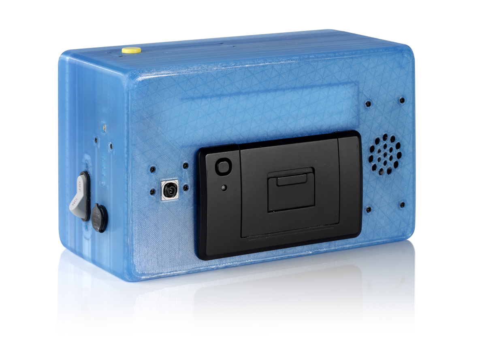
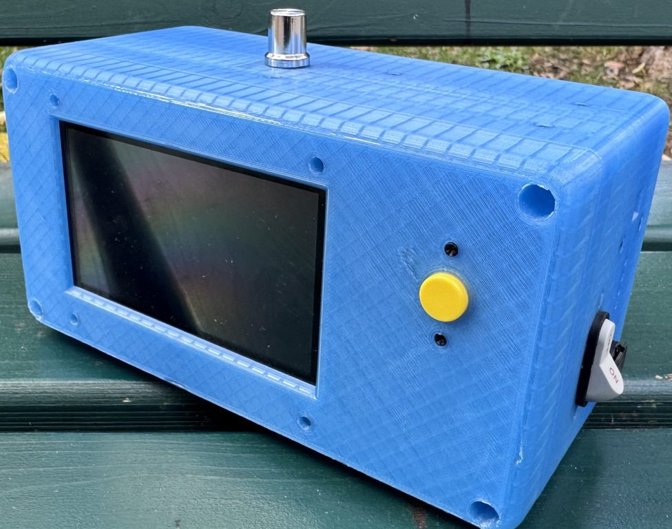
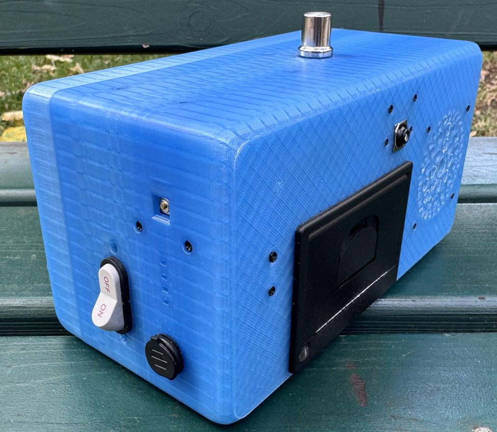

Hilfe
Die Kamera erklärt Probleme in einem Fenster. Es schließt sich mit OK, mit dem gelben Knopf oder nach 10 Sekunden.
| Die Kamera zeigt | Das hilft |
|---|---|
| „Kein Internet“ | WLAN in den Einstellungen prüfen. Ein Gedicht, das schon da ist, lässt sich weiter drucken und abspielen. |
| „Die Gedicht-KI antwortet nicht“ | Kurz warten, dann den Knopf noch einmal drücken. Eventuell druckt die Kamera eines ihrer eigenen Gedichte. |
| „Kein Gedicht zu diesem Foto“ | Ein anderes Motiv wählen. Die Prüfung kann sich irren: ein guter Anlass zum Gespräch. |
| „Dieses Gedicht hat die Prüfung nicht bestanden“ | Die Kamera druckt stattdessen eines ihrer eigenen Gedichte. Auch das lässt sich besprechen. |
| „Der Drucker funktioniert nicht“ | Papierrolle prüfen, dann auf Drucken tippen. Das Gedicht ist noch da. |
| „Kühlt ab… Die Kamera ist zu warm.“ | Ruhen lassen, nicht abdecken, aus der Sonne nehmen. Bei Bedarf schaltet sie sich selbst aus. |
| Bildschirm ist dunkel | Ruhemodus: Bildschirm antippen oder den gelben Knopf drücken. |
| Nichts hilft | Kamera neu starten: Schalter rechts auf OFF, etwa 10 Sekunden warten, wieder auf ON. |
Thermopapier, 58 mm breit. Der Drucker sitzt vorn: runde Lasche nach unten ziehen, Papierreste entnehmen, die neue Rolle so einlegen, dass das Papierende nach unten zeigt. Ein Stück Papier herausschauen lassen und die Klappe zudrücken.
Schalter auf OFF, alles laut Liste auf Seite 1 einpacken, Rückgabeprotokoll ausfüllen.
Kurzanleitung für Lehrkräfte
Ein Foto. Ein Gedicht. Sofort auf Papier.

Ihre PIN für die Einstellungen erhalten Sie getrennt vom Koffer.
Los geht’s
Die Kamera hat einen eingebauten Akku. Das Ladegerät kommt in die Ladebuchse an der rechten Seite. Ladestand: Knopf 9 drücken, die LEDs zeigen 100, 75, 50, 25 % oder „niedrig“.
Einschalten: Schalter rechts auf ON. Nach dem Start erscheint das Live-Bild.
Auf das WLAN-Symbol tippen, PIN eingeben, Netz wählen, Passwort eintippen. Netze mit persönlicher Anmeldung (802.1X) oder Anmeldeseite gehen nicht: vorher mit der IT klären.
Den gelben Knopf auf der Rückseite drücken, neben dem Bildschirm. Die Kamera prüft das Foto, eine KI schreibt das Gedicht, die Kamera prüft es. Nach wenigen Sekunden erscheint es.
Rechts auf Drucken oder Abspielen tippen. Während des Vorlesens heißt die Taste Stopp. Die Lautstärke regelt der Knopf oben.
Gelben Knopf einmal drücken: zurück zum Live-Bild. Noch einmal: neues Foto. Nach einer Minute ohne Berührung wird der Bildschirm dunkel, Antippen weckt ihn.


Für die Lehrkraft
WLAN · Online teilen · Sprache · Kamera & KI. Oben steht „Alles bereit“ oder „Bitte prüfen“. Nach fünf falschen PIN-Eingaben ist das Tastenfeld eine Minute gesperrt.
Auf Prompt tippen: Die Kamera zeigt den aktuellen Prompt und einen QR-Code. Mit dem Handy scannen und eine Idee aufschreiben, höchstens 200 Zeichen. Ein Prüfdienst kontrolliert jeden Prompt, bevor er die Kamera erreicht. Nach jedem Neustart gibt es einen neuen QR-Code.
Einstellungen → Sprache: Deutsch oder English. Bildschirm, Ausdrucke und Gedichte wechseln sofort.
Ist nach jedem Start aus. Eingeschaltet druckt die Kamera einen QR-Code auf den Zettel. Er führt 48 Stunden lang zu einer öffentlichen Seite mit Foto, Gedicht und Audio. Nur einschalten, wenn für alle Kinder auf den Fotos eine schriftliche Einwilligung der Eltern vorliegt.